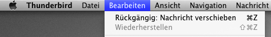
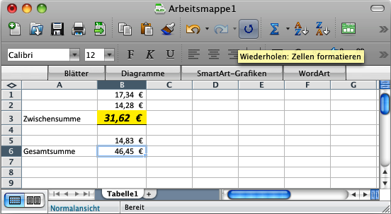
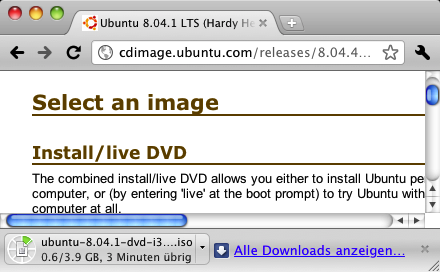
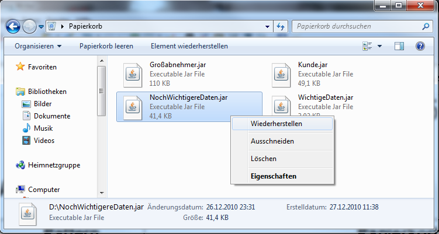
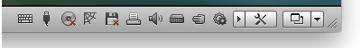

| Globales Undo |
Erlaube Benutzern, ausgeführte Aktionen rückgängig zu machen und den vorigen Zustand
des
Systems wiederherzustellen.
|
 |
| Objektbezogenes Undo |
Erlaube Benutzern, ausgeführte, objektbezogene Aktionen rückgängig zu machen und
den
vorigen Zustand des Objekts wiederherzustellen.
|
|
| Abbruch |
Erlaube Benutzern, Aktionen abzubrechen.
|
|
| Wiederholung |
Erlaube Benutzern, ausgeführte Aktionen auf einfache Weise zu wiederholen, ohne
alle
Eingabewerte ein weiteres Mal eingeben zu müssen.
|
 |
| Warnung |
Warne Benutzer vor der Ausführung irreversibler Aktionen.
|
|
| Fortschrittsanzeige |
Zeige den aktuellen Fortschritt bei der Ausführung der Aktion und ermögliche Benutzern
abzuschätzen, wie lange die Ausführung noch dauern wird.
|
 |
| Verarbeitungsanzeige |
Zeige Benutzern, dass das System gerade eine Aktion ausführt, die noch nicht
abgeschlossen ist.
|
 |
| Ausführung im Hintergrund |
Biete Benutzern an, langdauernde Aktionen im Hintergrund auszuführen.
|
 |
| Gute Standardwerte |
Fülle Eingabefelder mit guten Standardwerten, wenn solche Werte bekannt sind.
|
 |
| Direkte Validierung |
Prüfe Eingabewerte bereits während der Eingabe automatisch auf Gültigkeit.
|
 |
| Auto-Vervollständigung |
Schlage Benutzern während der Eingabe mögliche geeignete Eingabewerte vor.
|
 |
| Nachsichtiges Format |
Akzeptiere Eingaben in verschiedenen Formaten, und interpretiere unvollständige
oder
nicht eindeutige Eingabewerte im Sinne des Benutzers.
|
 |
| Filter |
Ermögliche Benutzern, dargestellte Daten nach eigenen Kriterien zu filten.
|
 |
| Vorschau |
Biete Benutzern eine Vorschau auf die voraussichtlichen Resultate der Aktion, ohne
die
Aktion vollständig auszuführen oder Änderungen durchzuführen.
|
 |
| Papierkorb |
Erlaube Benutzern, Daten zunächst vorläufig zu löschen und in einen „Papierkorb“
zu
verschieben.
|
 |
| Dokumentwiederherstellung |
Ermögliche Benutzern, nach einem Systemfehler die letzte Fassung eines Dokuments
wiederherzustellen.
|
 |
| Automatisches Speichern |
Speichere Änderungen automatisch.
|
 |
| Sicherheitskopie |
Erstelle beim Speichern des Dokuments eine Sicherheitskopie der vorherigen Fassung.
|
|
| Assistent |
Führe Benutzer mit Hilfe eines Assistenten schrittweise durch eine komplexe Aufgabe.
|
 |
| Systemstatus |
Stelle den aktuellen Status des Systems konsistent und leicht erkennbar dar.
|
 |